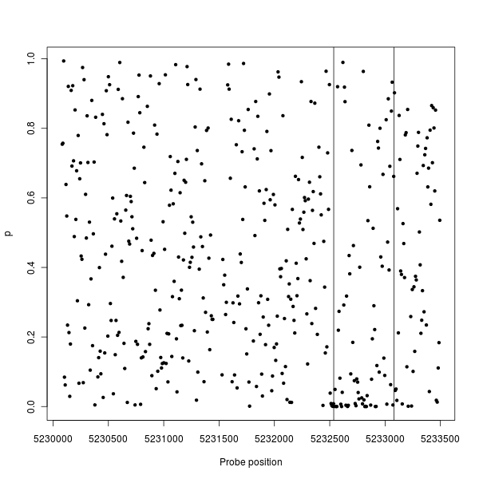
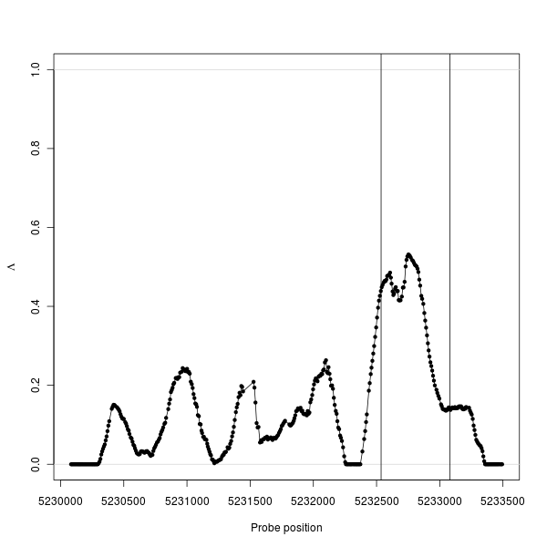
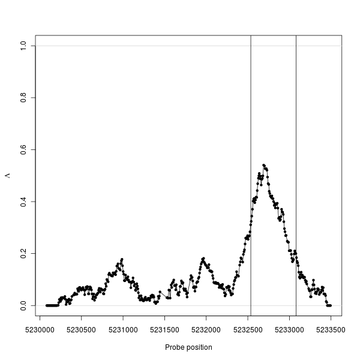
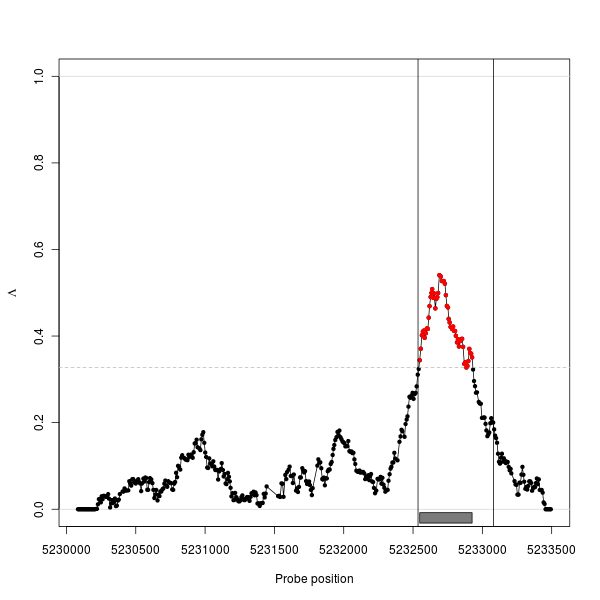
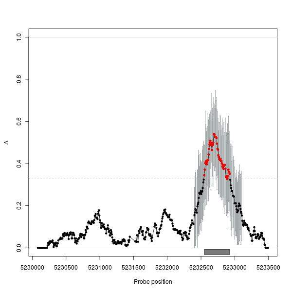
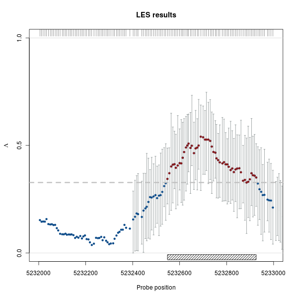

Identifying Differential Effects in Tiling Microarray Data with the les package
Table of Contents
Introduction
Tiling microarrays have become an important platform for the investigation of regulation in expression, DNA modification, and DNA-protein interaction. Since unbiased in relation to annotation they provide an powerful tool for biological research. Beside the analysis of single conditions, the investigation of regulation between multiple experimental conditions is an important part of current research. A common approach consists in assessing the differential effect on the level of individual probes and thereby computing p-values \(p_{i}\) for each probe \(i\) with a suitable statistical test, for example an F-test, independently. Since the targets exhibiting differential effects cover multiple probes, a reasonable next step involves combining information from neighboring probes. While several approaches for this purpose exist, most of them lack a statistical interpretation of the results or are specific for certain platforms and statistical tests.
The approach used here utilizes the fact that p-values in regions without an differential effect are uniformly distributed. In the case that regulation is present the distribution of \(p_{i}\) is shifted towards zero; such regions are therefore referred to as Loci of Enhanced Significance (LES). By assessing the uniform component of the p-value distribution within a sliding window, the local degree of significant probes along the genome is estimated. The les package implements the method for detecting LES in tiling microarray data sets, independent of the underlying statistical test and hence is suitable for a wide range of applications.
Data set and statistic testing on probe level
The data set used in this vignette is part of a quality control study for tiling microarrays1, in which spike-ins were used to assess the influence of microarray platforms, preparation procedures, and analysis algorithms on the accuracy and reproducibility of ChIP-chip experiments. Here, the expression intensities of one region from the undiluted data set investigated with Affymetrix tiling microarrays is selected, consisting of 452 probes and two conditions with three replicates each. The data has been normalized using quantile normalization and probe positions remapped to a common reference.
Normalized expression intensities are stored in the matrix exprs, with rows representing probes and columns arrays. The corresponding names contain the position of the probes and the condition of the samples, respectively. The properties of the spike-in DNA, yielding a region with differential effect, are described in the reference data frame.
library(les)
data(spikeInData)
head(exprs)
1 1 1 2 2 2
5230083 6.671288 6.826426 6.762979 6.779357 6.868966 6.782944
5230089 5.548030 5.478211 5.817685 5.679769 5.347560 6.009189
5230096 5.746862 5.487193 5.931810 5.639733 5.951060 5.570534
5230103 5.254493 5.070491 5.134345 5.821151 5.588138 5.152873
5230110 5.627828 5.656203 5.848418 5.425308 5.372586 5.249253
5230117 5.510349 5.912182 4.699285 5.112509 5.470490 5.181388
dim(exprs)
[1] 452 6
pos <- as.integer(rownames(exprs)) condition <- as.integer(colnames(exprs)) reference
chr start end length fold nProbes
26 chr11 5232536 5233080 545 2 74
region <- as.vector(reference[ ,c("start", "end")])
In order to assess the differential effect between the two conditions on the level of individual probes, we use a modified t-test provided by the limma package2. This offers an increased statistical power compared to a classical Student's t-test for small sample sizes, as present in most tiling microarray experiments.
library(limma)
design <- cbind(offset=1, diff=condition) fit <- lmFit(exprs, design) fit <- eBayes(fit) pval <- fit$p.value[, "diff"]
plot(pos, pval, pch=20, xlab="Probe position", ylab=expression(p))
abline(v=region)

Figure 1: Probe-level p-values
Incorporation of neighboring probes
The accumulation of small p-values indicates a LES at the location of the spike-in, whereas the response of individual probes may be not reliable (Figure 1). Therefore, an incorporation of neighboring probes should be beneficial and yield improved results in the detection of the differential effect. For each probe \(i\) the surrounding p-values \(p_{j}\) get weights assigned, corresponding to the distance of probe \(i\) and \(j\). Being free in the definition of the weighting function, the spatial relationship of probes in observing the same effect can be accounted for. A weighted cumulative density is computed and the fraction of significant \(p\) is estimated by an iterative regression. The method is based on the fact that p-values are uniformly distributed under the null hypothesis \(H_{0}\) whereas p-values violating \(H_{0}\) are shifted towards smaller values3, which is closely related to the estimation of a false discovery rate. This results in \(\Lambda_{i}\), constituting an estimate of the fraction of p-values violating \(H_{0}\) and therefore the degree of significance in the local surrounding of the evaluated position.
For the analysis, we first store all relevant data in an object of class Les by calling the Les method. The only data required are the positions of the probes \(i\), the corresponding p-values \(p_{i}\) from the statistical test, and optionally their chromosomal location.
res <- Les(pos, pval)
Then we can compute our estimate \(\Lambda_{i}\) for which we have to specify a weighting window. Here, we use a triangular window taken as default with a size of 200bp. The power of detecting a region will be high if the window matches approximately the properties of the regulated region. In many experiments a rough prior knowledge is available which can be sufficient for choosing a suitable window. Further, optimal weighting windows can be estimated from the data directly.
res <- estimate(res, win=200)
All data, results and parameters are stored in the res object of class Les. We can get an overview of the results with the print, summary, or plot method (Figure2).
res
** Object of class 'Les' ** * 452 probes on 1 chromosomes * Lambda in range [0, 0.531522] with window size 200
summary(res)
** Object of class 'Les' ** * 452 probes on 1 chromosomes * Lambda in range [0, 0.531522] with window size 200 * Available slots: [1] "pos" "pval" "chr" "win" "weighting" "grenander" [7] "minProbes" "method" "lambda" "lambda0" "nProbes" "nChr" [13] "state"
plot(res) abline(v=region)

Figure 2: Results with a triangular window
For comparison we analyze and plot the same data with a rectangular weighting window (Figure 3). In this example the rectangular window leads to better results. The les package includes four predefined windows; custom functions can also be used, as described in the section Specification of custom weighting windows.
res2 <- estimate(res, win=200, weighting=rectangWeight)
res2
** Object of class 'Les' ** * 452 probes on 1 chromosomes * Lambda in range [0, 0.540663] with window size 200
plot(res2) abline(v=region)

Figure 3: Results with a rectangular window
Parameter estimation
To turn the continuous \(\Lambda_{i}\) into distinct regions of interest we define a threshold \(\Theta\). It can be derived from the data by estimating the number of probes with a significant effect on the whole array.
res2 <- threshold(res2, grenander=TRUE, verbose=TRUE)
[1] "53 significant probes estimated for Lambda >= 0.327448"
Given \(\Theta\) we can look for regions that have a continuous \(\Lambda_{i}\geq\Theta\). The regions method takes by default the estimated \(\Theta\) from the previous step. We can also pass our own estimate for \(\Theta\) with the limit argument. Further restrictions can be imposed on the regions such as the minimal length of a region and the maximum gap allowed between probes in one region. The [ method allows to access any data slot of an object of class Les. Here, we use it to extract the data frame with the estimated regions and visualize the results (Figure 4).
res2 <- regions(res2, verbose=TRUE)
[1] "1 regions found for lambda>=0.327448"
res2
** Object of class 'Les' ** * 452 probes on 1 chromosomes * Lambda in range [0, 0.540663] with window size 200 * 53 regulated probes estimated for lambda >= 0.327448 * 1 regions detected
res2["regions"]
chr start end size nProbes ri se rs 1 0 5232548 5232926 379 53 0.5185 0.0087 59.4146
plot(res2, region=TRUE)
abline(v=region)

Figure 4: Results with estimates for regions
Calculation of confidence intervals
By bootstrapping probes in each window, confidence intervals for the statistic \(\Lambda_{i}\) can be computed (Figure 5). Since confidence intervals are primarily interesting in regions of interest and bootstrapping is by its nature computationally demanding, we can restrict the calculation to a subset of probes.
subset <- pos >= 5232400 & pos <= 5233100 res2 <- ci(res2, subset, nBoot=50, alpha=0.1)
plot(res2, error="ci", region=TRUE)

Figure 5: Results with confidence intervals and estimates for regions
Visualization
The plot method uses a special system in order to customize the graphical elements of the figure. It allows to refer to all its components with the name of the additional input argument; its value is a list containing named graphical parameters for the underlying plot function. As an example, we plot a smaller segment of the chromosome with confidence intervals, estimated region, and indicators for the probe density (Figure 6). Further, we adapt several parameters changing the graphical representation. For details, please refer to the help of the les package.
plot(res2, error="ci", region=TRUE, rug=TRUE, xlim=c(5232000, 5233000), plotArgs=list(main="LES results", yaxp=c(0, 1, 2)), sigArgs=list(col="firebrick4"), limitArgs=list(lty=2, lwd=3), regionArgs=list(col="black", density=20), probeArgs=list(col="dodgerblue4", type="p"))

Figure 6: Results with customized graphical parameters
Exporting results to external software
With the export method the estimated regions as well as \(\Lambda_{i}\) can be saved to standard files formats, in order to facilitate the export of the results to other software and genome browsers. The region estimates can be exported to the bed and gff formats, the test statistic \(\Lambda_{i}\) to the wig format.
bedFile <- paste(tempfile(), "bed", sep=".") gffFile <- paste(tempfile(), "gff", sep=".") wigFile <- paste(tempfile(), "wig", sep=".") export(res2, bedFile) export(res2, gffFile, format="gff") export(res2, wigFile, format="wig")
Specification of custom weighting windows
With the triangWeight, rectangWeight, epWeight, and gaussWeight functions, four weighting windows are included in the les package, providing a triangular, rectangular, Epanechnikov, and Gaussian window, respectively. We can also specify custom window functions and pass it as weighting argument in the estimate method. They have to be specified as a function depending on the distance of the probes (distance) and the window size (win), as illustrated here with a triangular weighting.
weightFoo <- function(distance, win) { weight <- 1 - distance/win return(weight) }
resFoo <- estimate(res, 200, weighting=weightFoo)
Session information
sessionInfo()
R version 2.13.1 (2011-07-08) Platform: x86_64-pc-linux-gnu (64-bit) locale: [1] LC_CTYPE=en_US.UTF-8 LC_NUMERIC=C [3] LC_TIME=en_US.UTF-8 LC_COLLATE=en_US.UTF-8 [5] LC_MONETARY=C LC_MESSAGES=en_US.UTF-8 [7] LC_PAPER=en_US.UTF-8 LC_NAME=C [9] LC_ADDRESS=C LC_TELEPHONE=C [11] LC_MEASUREMENT=en_US.UTF-8 LC_IDENTIFICATION=C attached base packages: [1] stats graphics grDevices utils datasets methods base other attached packages: [1] limma_3.9.11 les_1.3.0 fdrtool_1.2.7 loaded via a namespace (and not attached): [1] boot_1.3-2 gdata_2.8.2 gplots_2.8.0 gtools_2.6.2 [5] RColorBrewer_1.0-5 tools_2.13.1
Footnotes:
1 Johnson et al., 2008: Systematic evaluation of variability in ChIP-chip experiments using predefined DNA targets
2 Smyth, 2005: Limma: linear models for microarray data
3 Bartholomé et al., 2009: Estimation of Gene Induction Enables a Relevance-Based Ranking of Gene Sets